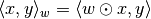
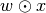
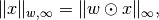
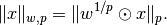
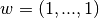

ProductSpaceArrayWeighting¶
-
class
odl.space.pspace.ProductSpaceArrayWeighting(array, exponent=2.0)[source]¶ Bases:
odl.space.weighting.ArrayWeightingArray weighting for
ProductSpace.This class defines a weighting that has a different value for each index defined in a given space. See
Notesfor mathematical details.- Attributes
Methods
dist(self, x1, x2)Calculate the distance between two elements.
equiv(self, other)Return True if other is an equivalent weighting.
inner(self, x1, x2)Calculate the array-weighted inner product of two elements.
is_valid(self)Return True if the array is a valid weight, i.e. positive.
norm(self, x)Calculate the array-weighted norm of an element.
-
__init__(self, array, exponent=2.0)[source]¶ Initialize a new instance.
- Parameters
- array1-dim.
array-like Weighting array of the inner product.
- exponentpositive float, optional
Exponent of the norm. For values other than 2.0, no inner product is defined.
- array1-dim.
Notes
For exponent 2.0, a new weighted inner product with array
 is defined as
is defined as
with component-wise multiplication . For other exponents, only
normanddistare defined. In the case of exponentinf, the weighted norm is
otherwise it is

Note that this definition does not fulfill the limit property in
 , i.e.,
, i.e.,unless . The reason for this choice is that the alternative with the limit property consists in ignoring the weights altogether.
The array may only have positive entries, otherwise it does not define an inner product or norm, respectively. This is not checked during initialization.